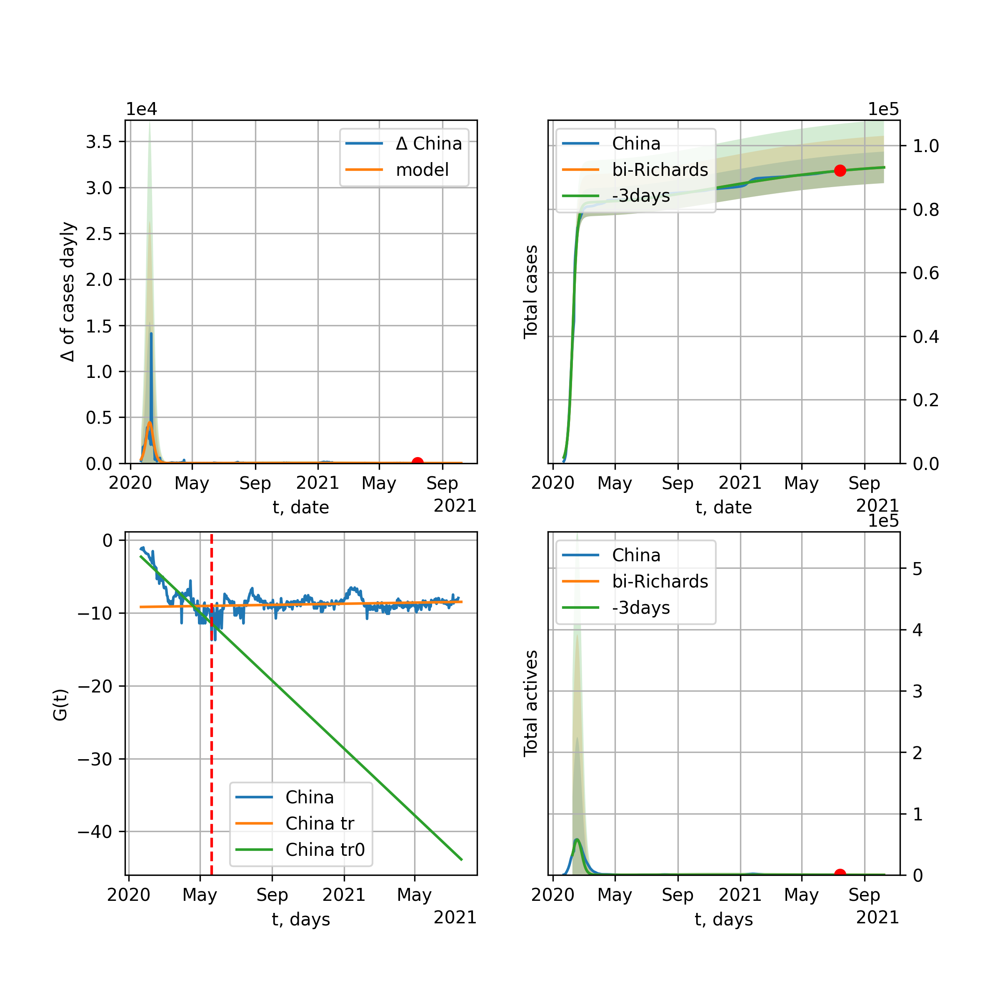
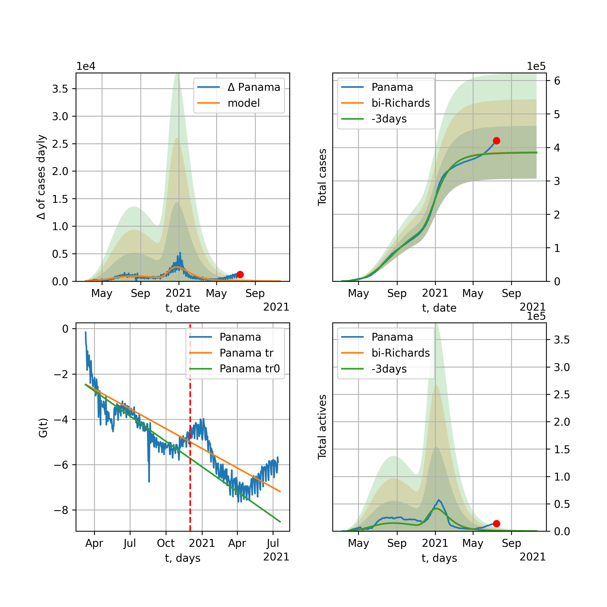

Multi-logistic model of COVID-19 dynamics
Model, code, results
Project maintained by algmaknick Hosted on GitHub Pages — Theme by mattgraham
World

World data at: 2020-06-19
+3 day model MAPE: 0.009219
model: bi-Richards
coeffs: [ 1.07365089e+07 1.89561625e+00 -3.93291523e+01 1.64278690e-02]
S.Korea scenario coeffs: [0.36242246, 2.56241634, 1.84890887, 0.13324732]
rational stdev: 0.083164
forecast at the end of period: +547 days
deltaDaycases: 7807
total cases: 18904035 ± 1572128
total death: 997797 ± 248941
bi-Richards approximation splitting point: 50
trend coefficient of determination: 0.841770
intercept: -2.310355
slope: -0.033497
trend coefficient of determination: 0.368356
intercept: -3.764364
slope: -0.006179
European Union

European Union data at: 2020-06-19
+3 day model MAPE: 0.004674
model: bi-Richards
coeffs: [ 2.18922269e+05 4.61589136e+00 -3.01884123e+01 9.20166340e-03]
rational stdev: 0.592798
forecast at the end of period: +29 days
deltaDaycases: 925
total cases: 1278971 ± 758172
total death: 135989 ± 241842
bi-Richards approximation splitting point: 83
trend coefficient of determination: 0.943419
intercept: -1.112594
slope: -0.057408
trend coefficient of determination: 0.005038
intercept: -5.640900
slope: -0.002344
Brazil

Brazil data at: 2020-06-19
+3 day model MAPE: 0.016391
model: Richards
coeffs: [1.92913056e+06 8.02386593e-02 7.94421644e+01 6.35294271e-01]
S.Korea scenario coeffs: [0.36242246, 2.56241634, 1.84890887, 0.13324732]
rational stdev: 0.308057
forecast at the end of period: +477 days
deltaDaycases: 91
total cases: 2623079 ± 808056
total death: 123985 ± 114583
trend coefficient of determination: 0.815048
intercept: -6.142704
slope: -0.067960
Russia

Russia data at: 2020-06-19
+3 day model MAPE: 0.010263
model: Richards
coeffs: [ 7.41397088e+05 2.38390254e+00 -5.85902791e+01 1.59722896e-02]
S.Korea scenario coeffs: [0.36242246, 2.56241634, 1.84890887, 0.13324732]
rational stdev: 0.118334
forecast at the end of period: +547 days
deltaDaycases: 108
total cases: 1001669 ± 118531
total death: 13801 ± 4899
trend coefficient of determination: 0.968790
intercept: -1.535295
slope: -0.033852
USA

USA data at: 2020-06-19
+3 day model MAPE: 0.010178
model: bi-Richards
coeffs: [ 1.37222574e+06 1.72240175e+00 -1.59554694e+01 2.17610130e-02]
rational stdev: 0.181593
forecast at the end of period: +141 days
deltaDaycases: 183
total cases: 2980752 ± 541284
total death: 157533 ± 85820
bi-Richards approximation splitting point: 65
trend coefficient of determination: 0.955317
intercept: -1.207475
slope: -0.052083
trend coefficient of determination: 0.464011
intercept: -3.744861
slope: -0.011272
Spain

Spain data at: 2020-06-19
+3 day model MAPE: 0.000572
model: Richards
coeffs: [ 2.93829068e+05 7.87114335e+00 -5.12442178e+01 7.70741767e-03]
S.Korea scenario coeffs: [0.36242246, 2.56241634, 1.84890887, 0.13324732]
rational stdev: 0.237058
forecast at the end of period: +267 days
deltaDaycases: 126
total cases: 394082 ± 93420
total death: 38128 ± 27115
trend coefficient of determination: 0.962538
intercept: -0.760663
slope: -0.059805
Italy

Italy data at: 2020-06-19
+3 day model MAPE: 0.000000
model: bi-Richards
coeffs: [-471.0883973 -5.45609315 59.59424532 0.51154818]
S.Korea scenario coeffs: [0.36242246, 2.56241634, 1.84890887, 0.13324732]
rational stdev: 1.523813
forecast at the end of period: +29 days
deltaDaycases: 18
total cases: 235970 ± 359574
total death: 34264 ± 156635
bi-Richards approximation splitting point: 98
trend coefficient of determination: 0.955451
intercept: -5.407654
slope: -0.082714
trend coefficient of determination: 0.002716
intercept: -13.378093
slope: 0.002728
United Kingdom

United Kingdom data at: 2020-06-19
+3 day model MAPE: 0.001371
model: Richards
coeffs: [ 3.18792375e+05 3.92328315e+00 -6.30652731e+01 1.17308217e-02]
S.Korea scenario coeffs: [0.36242246, 2.56241634, 1.84890887, 0.13324732]
rational stdev: 0.142298
forecast at the end of period: +337 days
deltaDaycases: 190
total cases: 421553 ± 59986
total death: 59306 ± 25317
trend coefficient of determination: 0.974546
intercept: -1.412925
slope: -0.044641
France

France data at: 2020-06-19
+3 day model MAPE: 0.001372
model: bi-Richards
coeffs: [2.11805213e+04 4.74151077e+00 2.46939017e+01 1.48436003e-02]
rational stdev: 0.185805
forecast at the end of period: +29 days
deltaDaycases: 52
total cases: 163290 ± 30340
total death: 30329 ± 16905
bi-Richards approximation splitting point: 82
trend coefficient of determination: 0.894461
intercept: -0.881851
slope: -0.068652
trend coefficient of determination: 0.033124
intercept: -7.521929
slope: 0.014426
Germany

Germany data at: 2020-06-19
+3 day model MAPE: 0.005817
model: bi-Richards
coeffs: [1.27170107e+04 1.57138017e+01 4.66808326e+00 4.82624950e-03]
rational stdev: 0.137615
forecast at the end of period: +43 days
deltaDaycases: 8
total cases: 191720 ± 26383
total death: 9009 ± 3719
bi-Richards approximation splitting point: 94
trend coefficient of determination: 0.950738
intercept: -1.408661
slope: -0.061068
trend coefficient of determination: 0.519109
intercept: -20.674020
slope: 0.145744
Turkey

Turkey data at: 2020-06-19
+3 day model MAPE: 0.010810
model: bi-Richards
coeffs: [ 6.88922480e+04 5.41309315e+00 -1.89062779e+01 7.92204145e-03]
rational stdev: 0.206362
forecast at the end of period: +43 days
deltaDaycases: 423
total cases: 219627 ± 45322
total death: 5815 ± 3599
bi-Richards approximation splitting point: 75
trend coefficient of determination: 0.775356
intercept: -0.958722
slope: -0.057772
trend coefficient of determination: 0.209770
intercept: -6.113455
slope: 0.010834
Iran

Iran data at: 2020-06-19
+3 day model MAPE: 0.005984
model: bi-Richards
coeffs: [1.51829372e+05 2.87155459e+00 6.97717949e+00 1.61381132e-02]
S.Korea scenario coeffs: [0.36242246, 2.56241634, 1.84890887, 0.13324732]
rational stdev: 0.273634
forecast at the end of period: +421 days
deltaDaycases: 94
total cases: 303010 ± 82914
total death: 14210 ± 11665
bi-Richards approximation splitting point: 75
trend coefficient of determination: 0.949236
intercept: -0.943080
slope: -0.055580
trend coefficient of determination: 0.109172
intercept: -3.996732
slope: -0.003995
Canada

Canada data at: 2020-06-19
+3 day model MAPE: 0.000561
model: Richards
coeffs: [ 1.10097001e+05 3.64784194e+00 -7.45766614e+01 1.15591074e-02]
S.Korea scenario coeffs: [0.36242246, 2.56241634, 1.84890887, 0.13324732]
rational stdev: 0.163083
forecast at the end of period: +420 days
deltaDaycases: 31
total cases: 147728 ± 24092
total death: 12252 ± 5994
trend coefficient of determination: 0.979553
intercept: -1.562415
slope: -0.044284
Belgium

Belgium data at: 2020-06-19
+3 day model MAPE: 0.001882
model: Richards
coeffs: [ 6.00575193e+04 6.50214917e+00 -4.61373641e+01 1.00900605e-02]
S.Korea scenario coeffs: [0.36242246, 2.56241634, 1.84890887, 0.13324732]
rational stdev: 0.532276
forecast at the end of period: +253 days
deltaDaycases: 20
total cases: 80901 ± 43061
total death: 12969 ± 20709
trend coefficient of determination: 0.958390
intercept: -1.292128
slope: -0.055436
Peru

Peru data at: 2020-06-19
+3 day model MAPE: 0.016197
model: Richards
coeffs: [4.27349970e+05 1.67217833e-01 3.54860097e+01 2.10960536e-01]
S.Korea scenario coeffs: [0.36242246, 2.56241634, 1.84890887, 0.13324732]
rational stdev: 0.321094
forecast at the end of period: +757 days
deltaDaycases: 5
total cases: 581812 ± 186816
total death: 17975 ± 17314
trend coefficient of determination: 0.881204
intercept: -2.438513
slope: -0.044112
Netherlands

Netherlands data at: 2020-06-19
+3 day model MAPE: 0.000540
model: bi-Richards
coeffs: [5.07135298e+03 5.79237614e+00 3.69669338e+01 1.34937341e-02]
rational stdev: 0.134051
forecast at the end of period: +29 days
deltaDaycases: 19
total cases: 51164 ± 6858
total death: 6294 ± 2531
bi-Richards approximation splitting point: 75
trend coefficient of determination: 0.961172
intercept: -0.838797
slope: -0.062299
trend coefficient of determination: 0.119016
intercept: -4.990237
slope: -0.008967
India

India data at: 2020-06-19
+3 day model MAPE: 0.000364
model: Richards
coeffs: [ 3.19809402e+06 2.51806944e-01 -7.68098629e+00 6.76096565e-02]
S.Korea scenario coeffs: [0.36242246, 2.56241634, 1.84890887, 0.13324732]
rational stdev: 0.365070
forecast at the end of period: +1037 days
deltaDaycases: 797
total cases: 4210470 ± 1537116
total death: 137840 ± 150963
trend coefficient of determination: 0.725509
intercept: -1.968247
slope: -0.022562
Switzerland

Switzerland data at: 2020-06-19
+3 day model MAPE: 0.001456
model: logisticQ
coeffs: [ 3.04729009e+04 5.40742664e-07 2.62966791e+01 -2.57082939e+05]
rational stdev: 0.314054
forecast at the end of period: +57 days
deltaDaycases: 0
total cases: 30472 ± 9570
total death: 1908 ± 1797
trend coefficient of determination: 0.981719
intercept_: -4.161506259693846
coeffs_: [ 0. -0.28587011 0.00149337]
Ecuador

Ecuador data at: 2020-06-19
+3 day model MAPE: 0.010493
model: Richards
coeffs: [ 5.91405077e+04 2.84733877e+00 -8.32363391e+01 1.14061101e-02]
S.Korea scenario coeffs: [0.36242246, 2.56241634, 1.84890887, 0.13324732]
rational stdev: 0.339866
forecast at the end of period: +617 days
deltaDaycases: 9
total cases: 79719 ± 27093
total death: 6662 ± 6792
trend coefficient of determination: 0.193254
intercept: -2.232368
slope: -0.032278
Portugal

Portugal data at: 2020-06-19
+3 day model MAPE: 0.001863
model: bi-Richards
coeffs: [ 2.62596759e+04 1.86050730e+00 -3.73504289e+01 1.72366121e-02]
rational stdev: 0.054364
forecast at the end of period: +197 days
deltaDaycases: 1
total cases: 54376 ± 2956
total death: 2158 ± 351
bi-Richards approximation splitting point: 61
trend coefficient of determination: 0.904296
intercept: -1.193688
slope: -0.070237
trend coefficient of determination: 0.069138
intercept: -5.403602
slope: 0.005299
Saudi Arabia

Saudi Arabia data at: 2020-06-19
+3 day model MAPE: 0.040735
model: Richards
coeffs: [ 3.92105419e+05 1.23612824e+00 -9.18327638e+01 1.70810874e-02]
S.Korea scenario coeffs: [0.36242246, 2.56241634, 1.84890887, 0.13324732]
rational stdev: 0.272097
forecast at the end of period: +435 days
deltaDaycases: 182
total cases: 401409 ± 109222
total death: 3162 ± 2581
trend coefficient of determination: 0.215717
intercept: -2.085944
slope: -0.016823
Sweden

Sweden data at: 2020-06-18
+3 day model MAPE: 0.011272
model: bi-Richards
coeffs: [5.04354258e+04 3.34559612e-01 7.49812181e+01 1.51655643e-01]
rational stdev: 0.238570
forecast at the end of period: +93 days
deltaDaycases: 40
total cases: 96908 ± 23119
total death: 8737 ± 6253
bi-Richards approximation splitting point: 80
trend coefficient of determination: 0.862446
intercept: -1.936169
slope: -0.050683
trend coefficient of determination: 0.020888
intercept: -6.386015
slope: 0.006771
Pakistan

Pakistan data at: 2020-06-19
+3 day model MAPE: 0.013018
model: bi-logisticQ
coeffs: [ 6.34741343e+05 5.68668790e-06 1.23353744e+02 -9.31589617e+03]
S.Korea scenario coeffs: [0.35416971, 0.02606324, 4.35859408, 19.30413219]
rational stdev: 0.388342
forecast at the end of period: +631 days
deltaDaycases: 29
total cases: 858750 ± 333488
total death: 16918 ± 19709
bi-logisticQ approximation splitting point: 20
trend coefficient of determination: 0.391568
intercept_: -3.9808806978581046
coeffs_: [ 0. -0.04620278 -0.00453428]
trend coefficient of determination: 0.963186
intercept_: -5.697633971020043
coeffs_: [ 0. -0.15026192 0.00059654]
Pakistan

Pakistan data at: 2020-06-19
+3 day model MAPE: 0.010342
model: Richards
coeffs: [1.38185460e+07 8.55427506e-02 9.67951536e+01 1.46856627e-01]
S.Korea scenario coeffs: [0.36242246, 2.56241634, 1.84890887, 0.13324732]
rational stdev: 0.374837
forecast at the end of period: +1737 days
deltaDaycases: 842
total cases: 18626616 ± 6981936
total death: 366963 ± 412653
trend coefficient of determination: 0.616689
intercept: -2.666786
slope: -0.024086
Ireland

Ireland data at: 2020-06-19
+3 day model MAPE: 0.001704
model: logisticQ
coeffs: [ 2.49464978e+04 9.18369352e-07 3.60776901e+01 -1.28926343e+05]
S.Korea scenario coeffs: [0.35416971, 0.02606324, 4.35859408, 19.30413219]
rational stdev: 0.293793
forecast at the end of period: +99 days
deltaDaycases: 38
total cases: 33103 ± 9725
total death: 2236 ± 1970
trend coefficient of determination: 0.979162
intercept_: -4.28438824516976
coeffs_: [ 0. -0.22960827 0.0009835 ]
Mexico

Mexico data at: 2020-06-19
+3 day model MAPE: 0.003889
model: Richards
coeffs: [ 7.57760058e+05 5.01621284e-01 -6.59106168e+01 3.76151377e-02]
S.Korea scenario coeffs: [0.36242246, 2.56241634, 1.84890887, 0.13324732]
rational stdev: 0.183483
forecast at the end of period: +897 days
deltaDaycases: 245
total cases: 991159 ± 181860
total death: 118565 ± 65263
trend coefficient of determination: 0.901905
intercept: -2.059814
slope: -0.022971
Singapore

Singapore data at: 2020-06-19
+3 day model MAPE: 0.008254
model: bi-Richards
coeffs: [ 3.66981805e+04 5.79775402e+00 -2.34751188e+01 7.19894692e-03]
S.Korea scenario coeffs: [0.36242246, 2.56241634, 1.84890887, 0.13324732]
rational stdev: 0.260526
forecast at the end of period: +337 days
deltaDaycases: 63
total cases: 53108 ± 13836
total death: 33 ± 25
bi-Richards approximation splitting point: 60
trend coefficient of determination: 0.124851
intercept: -2.317377
slope: -0.021571
trend coefficient of determination: 0.592115
intercept: 0.412826
slope: -0.038788
Chile

Chile data at: 2020-06-19
+3 day model MAPE: 0.000555
model: Richards
coeffs: [3.17542061e+05 6.27962257e-02 5.45100681e+01 1.48286798e+00]
S.Korea scenario coeffs: [0.36242246, 2.56241634, 1.84890887, 0.13324732]
rational stdev: 0.101899
forecast at the end of period: +169 days
deltaDaycases: 287
total cases: 423232 ± 43127
total death: 7486 ± 2288
trend coefficient of determination: 0.977476
intercept: -16.326321
slope: -0.082955
Israel

Israel data at: 2020-06-19
+3 day model MAPE: 0.021546
model: bi-Richards
coeffs: [5.83627156e+03 7.79118019e+00 3.74232377e+01 1.19731312e-02]
rational stdev: 0.133438
forecast at the end of period: +43 days
deltaDaycases: 6
total cases: 22822 ± 3045
total death: 341 ± 136
bi-Richards approximation splitting point: 70
trend coefficient of determination: 0.928151
intercept: -0.999895
slope: -0.092514
trend coefficient of determination: 0.543822
intercept: -12.830499
slope: 0.088676
Austria

Austria data at: 2020-06-19
+3 day model MAPE: 0.002213
model: bi-Richards
coeffs: [ 2.17745851e+03 8.75222460e+00 -2.92902756e+01 6.60803752e-03]
rational stdev: 0.382273
forecast at the end of period: +29 days
deltaDaycases: 2
total cases: 17370 ± 6640
total death: 691 ± 792
bi-Richards approximation splitting point: 65
trend coefficient of determination: 0.933078
intercept: -1.066601
slope: -0.092188
trend coefficient of determination: 0.097600
intercept: -4.644398
slope: -0.021697
Belarus

Belarus data at: 2020-06-19
+3 day model MAPE: 0.004077
model: Richards
coeffs: [ 7.56340010e+04 2.44138878e+00 -7.90151508e+01 1.48188655e-02]
S.Korea scenario coeffs: [0.36242246, 2.56241634, 1.84890887, 0.13324732]
rational stdev: 0.179628
forecast at the end of period: +477 days
deltaDaycases: 29
total cases: 100573 ± 18065
total death: 591 ± 318
trend coefficient of determination: 0.942667
intercept: -1.742513
slope: -0.038199
Japan

Japan data at: 2020-06-19
+3 day model MAPE: 0.005096
model: bi-Richards
coeffs: [2.36996200e+03 9.85899552e+00 2.00589362e+01 5.12559704e-03]
rational stdev: 0.697485
forecast at the end of period: +22 days
deltaDaycases: 15
total cases: 18160 ± 12666
total death: 957 ± 2002
bi-Richards approximation splitting point: 115
trend coefficient of determination: 0.000516
intercept: -3.625026
slope: -0.001391
trend coefficient of determination: 0.106276
intercept: -7.858746
slope: 0.013503
China

China data at: 2020-06-19
+3 day model MAPE: 0.000277
model: bi-Richards
coeffs: [1.23595920e+03 6.51529012e+01 4.22850505e+01 2.85624494e-03]
rational stdev: 0.099638
forecast at the end of period: +15 days
deltaDaycases: 0
total cases: 83009 ± 8270
total death: 4614 ± 1379
bi-Richards approximation splitting point: 110
trend coefficient of determination: 0.821001
intercept: -1.982008
slope: -0.082683
trend coefficient of determination: 0.172883
intercept: -16.867233
slope: 0.054859
Qatar

Qatar data at: 2020-06-19
+3 day model MAPE: 0.012298
model: bi-Richards
coeffs: [1.22825703e+05 1.16023458e-01 4.83213691e+01 3.97860631e-01]
S.Korea scenario coeffs: [0.36242246, 2.56241634, 1.84890887, 0.13324732]
rational stdev: 0.180615
forecast at the end of period: +631 days
deltaDaycases: 0
total cases: 167801 ± 30307
total death: 182 ± 98
bi-Richards approximation splitting point: 20
trend coefficient of determination: 0.046154
intercept: -6.048337
slope: 0.029024
trend coefficient of determination: 0.952568
intercept: -4.296885
slope: -0.046572
Poland

Poland data at: 2020-06-19
+3 day model MAPE: 0.007507
model: bi-Richards
coeffs: [ 2.36802731e+04 2.54322379e+00 -1.37875392e+01 1.60733139e-02]
rational stdev: 0.118610
forecast at the end of period: +127 days
deltaDaycases: 3
total cases: 42440 ± 5033
total death: 1807 ± 642
bi-Richards approximation splitting point: 60
trend coefficient of determination: 0.717380
intercept: -1.180148
slope: -0.047989
trend coefficient of determination: 0.421843
intercept: -3.063842
slope: -0.014336
UAE

UAE data at: 2020-06-19
+3 day model MAPE: 0.013510
model: Richards
coeffs: [6.03727189e+04 2.14600352e-01 1.42291305e+01 1.67672721e-01]
S.Korea scenario coeffs: [0.36242246, 2.56241634, 1.84890887, 0.13324732]
rational stdev: 0.228036
forecast at the end of period: +631 days
deltaDaycases: 2
total cases: 82077 ± 18716
total death: 557 ± 381
trend coefficient of determination: 0.000036
intercept: -5.326319
slope: 0.000495
Romania

Romania data at: 2020-06-19
+3 day model MAPE: 0.005994
model: bi-Richards
coeffs: [4.00645512e+05 2.26433466e-01 7.81506260e+01 1.01840099e-01]
rational stdev: 0.146974
forecast at the end of period: +309 days
deltaDaycases: 46
total cases: 419747 ± 61692
total death: 26619 ± 11736
bi-Richards approximation splitting point: 82
trend coefficient of determination: 0.933715
intercept: -1.697539
slope: -0.052604
trend coefficient of determination: 0.287888
intercept: -7.586146
slope: 0.020566
Panama

Panama data at: 2020-06-19
+3 day model MAPE: 0.012469
model: bi-Richards
coeffs: [3.56352136e+04 2.59660683e+00 1.64441347e+01 1.92820039e-02]
rational stdev: 0.225133
forecast at the end of period: +85 days
deltaDaycases: 30
total cases: 48523 ± 10924
total death: 969 ± 654
bi-Richards approximation splitting point: 70
trend coefficient of determination: 0.874603
intercept: -1.306693
slope: -0.048650
trend coefficient of determination: 0.291984
intercept: -5.346540
slope: 0.018409
Ukraine

Ukraine data at: 2020-06-19
+3 day model MAPE: 0.001907
model: bi-Richards
coeffs: [1.00495981e+05 5.79398427e-01 3.31605692e+01 5.97191542e-02]
rational stdev: 0.171389
forecast at the end of period: +232 days
deltaDaycases: 2
total cases: 127728 ± 21891
total death: 3596 ± 1848
bi-Richards approximation splitting point: 65
trend coefficient of determination: 0.709163
intercept: -1.567877
slope: -0.046428
trend coefficient of determination: 0.109314
intercept: -5.109883
slope: 0.006984
Indonesia

Indonesia data at: 2020-06-19
+3 day model MAPE: 0.021219
model: Richards
coeffs: [ 2.21166909e+05 7.50881727e-01 -1.79754472e+02 1.75458151e-02]
S.Korea scenario coeffs: [0.36242246, 2.56241634, 1.84890887, 0.13324732]
rational stdev: 0.247373
forecast at the end of period: +1205 days
deltaDaycases: 77
total cases: 281410 ± 69613
total death: 15245 ± 11313
trend coefficient of determination: 0.753254
intercept: -2.193655
slope: -0.022016
Bangladesh

Bangladesh data at: 2020-06-19
+3 day model MAPE: 0.004033
model: bi-Richards
coeffs: [ 9.06799078e+05 4.21545528e-01 -4.10052113e+01 4.14007192e-02]
S.Korea scenario coeffs: [0.36242246, 2.56241634, 1.84890887, 0.13324732]
rational stdev: 0.404363
forecast at the end of period: +925 days
deltaDaycases: 398
total cases: 1159217 ± 468744
total death: 15246 ± 18494
bi-Richards approximation splitting point: 29
trend coefficient of determination: 0.031843
intercept: -4.319638
slope: 0.049343
trend coefficient of determination: 0.823201
intercept: -1.262990
slope: -0.027392
South_Korea

South Korea data at: 2020-06-19
+3 day model MAPE: 0.002575
model: bi-Richards
coeffs: [ 6.77703335e+03 2.15346695e+00 -1.28417386e+02 8.59567609e-03]
rational stdev: 0.160420
forecast at the end of period: +127 days
deltaDaycases: 13
total cases: 16428 ± 2635
total death: 371 ± 178
bi-Richards approximation splitting point: 73
trend coefficient of determination: 0.865753
intercept: -1.340476
slope: -0.089482
trend coefficient of determination: 0.516177
intercept: -9.847645
slope: 0.037613
Moldova

Moldova data at: 2020-06-19
+3 day model MAPE: 0.028185
model: bi-Richards
coeffs: [ 5.20053719e+04 1.25952901e+00 -4.07926059e+01 1.89538400e-02]
S.Korea scenario coeffs: [0.36242246, 2.56241634, 1.84890887, 0.13324732]
rational stdev: 0.362186
forecast at the end of period: +295 days
deltaDaycases: 2
total cases: 58222 ± 21087
total death: 1932 ± 2099
bi-Richards approximation splitting point: 60
trend coefficient of determination: 0.534527
intercept: -1.495217
slope: -0.039092
trend coefficient of determination: 0.005040
intercept: -4.102647
slope: 0.002122
Denmark

Denmark data at: 2020-06-19
+3 day model MAPE: 0.003428
model: bi-Richards
coeffs: [ 2.33286918e+03 4.06773602e+00 -2.89299978e+01 8.14783317e-03]
rational stdev: 0.263791
forecast at the end of period: +78 days
deltaDaycases: 8
total cases: 14170 ± 3738
total death: 686 ± 542
bi-Richards approximation splitting point: 90
trend coefficient of determination: 0.893722
intercept: -1.456248
slope: -0.048975
trend coefficient of determination: 0.010135
intercept: -6.705653
slope: 0.007940
Serbia

Serbia data at: 2020-06-19
+3 day model MAPE: 0.005551
model: bi-Richards
coeffs: [ 7.11660324e+03 1.67590158e+00 -6.72603142e+01 1.51293316e-02]
rational stdev: 0.127688
forecast at the end of period: +113 days
deltaDaycases: 11
total cases: 17001 ± 2170
total death: 346 ± 132
bi-Richards approximation splitting point: 50
trend coefficient of determination: 0.685325
intercept: -1.216254
slope: -0.049216
trend coefficient of determination: 0.239361
intercept: -3.825210
slope: -0.018556
Kuwait

Kuwait data at: 2020-06-19
+3 day model MAPE: 0.015521
model: Richards
coeffs: [4.21023077e+04 9.79582986e-02 6.78973421e+01 8.59599064e-01]
S.Korea scenario coeffs: [0.36242246, 2.56241634, 1.84890887, 0.13324732]
rational stdev: 0.380811
forecast at the end of period: +176 days
deltaDaycases: 49
total cases: 55520 ± 21142
total death: 449 ± 512
trend coefficient of determination: 0.948000
intercept: -6.259880
slope: -0.069892
Philippines

Philippines data at: 2020-06-19
+3 day model MAPE: 0.009822
model: Richards
coeffs: [ 1.94820882e+05 5.63127886e-01 -2.24106346e+02 1.85713912e-02]
S.Korea scenario coeffs: [0.36242246, 2.56241634, 1.84890887, 0.13324732]
rational stdev: 0.358094
forecast at the end of period: +1513 days
deltaDaycases: 55
total cases: 247211 ± 88524
total death: 9815 ± 10544
trend coefficient of determination: 0.542462
intercept: -2.145829
slope: -0.024936
Norway

Norway data at: 2020-06-19
+3 day model MAPE: 0.002511
model: bi-Richards
coeffs: [6.76225843e+02 3.33589706e+00 7.35212817e+00 1.43835036e-02]
rational stdev: 0.150569
forecast at the end of period: +29 days
deltaDaycases: 4
total cases: 8930 ± 1344
total death: 249 ± 112
bi-Richards approximation splitting point: 90
trend coefficient of determination: 0.939770
intercept: -0.930285
slope: -0.069007
trend coefficient of determination: 0.025656
intercept: -7.981915
slope: 0.013049
Czechia

Czechia data at: 2020-06-19
+3 day model MAPE: 0.006677
model: bi-Richards
coeffs: [ 3.67269827e+03 3.62750283e+00 -2.77545168e+01 1.12557184e-02]
rational stdev: 1.022982
forecast at the end of period: +57 days
deltaDaycases: 6
total cases: 11423 ± 11686
total death: 367 ± 1126
bi-Richards approximation splitting point: 59
trend coefficient of determination: 0.397179
intercept: -1.468050
slope: -0.054555
trend coefficient of determination: 0.000145
intercept: -5.246813
slope: -0.000350
Colombia

Colombia data at: 2020-06-19
+3 day model MAPE: 0.028562
model: bi-Richards
coeffs: [ 3.08694885e+05 9.16592874e-01 -5.36454490e+01 2.37253093e-02]
S.Korea scenario coeffs: [0.36242246, 2.56241634, 1.84890887, 0.13324732]
rational stdev: 0.181675
forecast at the end of period: +687 days
deltaDaycases: 242
total cases: 384164 ± 69793
total death: 12415 ± 6766
bi-Richards approximation splitting point: 40
trend coefficient of determination: 0.750768
intercept: -1.043983
slope: -0.064686
trend coefficient of determination: 0.270338
intercept: -2.952903
slope: -0.005646
Australia

Australia data at: 2020-06-19
+3 day model MAPE: 0.003165
model: bi-Richards
coeffs: [ 1.14384710e+03 6.70846010e+00 -6.10618570e+01 6.76032298e-03]
rational stdev: 0.673535
forecast at the end of period: +29 days
deltaDaycases: 1
total cases: 7414 ± 4994
total death: 101 ± 204
bi-Richards approximation splitting point: 50
trend coefficient of determination: 0.754833
intercept: -0.971686
slope: -0.083424
trend coefficient of determination: 0.044837
intercept: -5.892152
slope: -0.007664
Malaysia

Malaysia data at: 2020-06-19
+3 day model MAPE: 0.002470
model: bi-Richards
coeffs: [2.08267032e+03 1.25462385e-01 8.27820350e+01 1.11185874e+00]
S.Korea scenario coeffs: [0.36242246, 2.56241634, 1.84890887, 0.13324732]
rational stdev: 0.142994
forecast at the end of period: +29 days
deltaDaycases: 0
total cases: 8638 ± 1235
total death: 122 ± 52
bi-Richards approximation splitting point: 70
trend coefficient of determination: 0.816891
intercept: -6.173108
slope: -0.143964
trend coefficient of determination: 0.331545
intercept: -10.936580
slope: -0.049584
Dominican Republic

Dominican Republic data at: 2020-06-19
+3 day model MAPE: 0.014911
model: Richards
coeffs: [ 4.85174877e+04 1.54032786e+00 -1.21194564e+02 1.35753788e-02]
S.Korea scenario coeffs: [0.36242246, 2.56241634, 1.84890887, 0.13324732]
rational stdev: 0.383907
forecast at the end of period: +911 days
deltaDaycases: 9
total cases: 64738 ± 24853
total death: 1670 ± 1923
trend coefficient of determination: 0.029761
intercept: -3.114038
slope: -0.007488
Egypt

Egypt data at: 2020-06-19
+3 day model MAPE: 0.022277
model: logisticQ
coeffs: [ 1.16785229e+05 4.99069487e-05 8.82113866e+01 -1.11734205e+03]
S.Korea scenario coeffs: [0.35416971, 0.02606324, 4.35859408, 19.30413219]
rational stdev: 0.217681
forecast at the end of period: +512 days
deltaDaycases: 2
total cases: 158056 ± 34406
total death: 6106 ± 3987
trend coefficient of determination: 0.973326
intercept_: -7.7844153453574165
coeffs_: [ 0. -0.10927977 0.00044925]
Finland

Finland data at: 2020-06-19
+3 day model MAPE: 0.001546
model: Richards
coeffs: [ 7.41180905e+03 5.76950142e-01 -2.00238954e+01 8.71602309e-02]
S.Korea scenario coeffs: [0.36242246, 2.56241634, 1.84890887, 0.13324732]
rational stdev: 0.151656
forecast at the end of period: +309 days
deltaDaycases: 1
total cases: 9985 ± 1514
total death: 456 ± 207
trend coefficient of determination: 0.877123
intercept: -1.805136
slope: -0.056277
Morocco

Morocco data at: 2020-06-19
+3 day model MAPE: 0.056809
model: bi-Richards
coeffs: [5.31759892e+04 8.16156414e+00 2.78200842e+00 5.44866308e-03]
rational stdev: 0.112833
forecast at the end of period: +169 days
deltaDaycases: 5
total cases: 62018 ± 6997
total death: 1374 ± 465
bi-Richards approximation splitting point: 85
trend coefficient of determination: 0.873227
intercept: -1.460626
slope: -0.046106
trend coefficient of determination: 0.108853
intercept: -11.007367
slope: 0.070329
Argentina

Argentina data at: 2020-06-19
+3 day model MAPE: 0.000891
model: Richards
coeffs: [2.37137104e+05 4.54423065e-02 1.21539128e+02 6.87982709e+00]
S.Korea scenario coeffs: [0.36242246, 2.56241634, 1.84890887, 0.13324732]
rational stdev: 0.182668
forecast at the end of period: +197 days
deltaDaycases: 31
total cases: 322796 ± 58964
total death: 7986 ± 4376
trend coefficient of determination: 0.948051
intercept: -47.899390
slope: -0.318614
Algeria

Algeria data at: 2020-06-19
+3 day model MAPE: 0.006368
model: logisticQ
coeffs: [ 1.24747160e+04 1.32008483e-06 4.95695600e+01 -4.53755366e+04]
S.Korea scenario coeffs: [0.35416971, 0.02606324, 4.35859408, 19.30413219]
rational stdev: 0.244804
forecast at the end of period: +253 days
deltaDaycases: 3
total cases: 16790 ± 4110
total death: 1204 ± 884
trend coefficient of determination: 0.958239
intercept_: -6.907773688120206
coeffs_: [ 0. -0.14059471 0.00071859]
Luxembourg

Luxembourg data at: 2020-06-19
+3 day model MAPE: 0.002786
model: bi-Richards
coeffs: [ 2.07003898e+02 2.31193659e+01 -5.13669441e+00 3.50917476e-03]
rational stdev: 0.242012
forecast at the end of period: +15 days
deltaDaycases: 0
total cases: 4083 ± 988
total death: 109 ± 79
bi-Richards approximation splitting point: 75
trend coefficient of determination: 0.627653
intercept: -1.675450
slope: -0.070837
trend coefficient of determination: 0.128493
intercept: -9.828763
slope: 0.030166
Thailand

Thailand data at: 2020-06-19
+3 day model MAPE: 0.000778
model: bi-Richards
coeffs: [ 2.34131822e+02 5.33976939e+00 -4.16709412e+01 8.36253370e-03]
rational stdev: 0.074862
forecast at the end of period: +43 days
deltaDaycases: 0
total cases: 3216 ± 240
total death: 59 ± 13
bi-Richards approximation splitting point: 60
trend coefficient of determination: 0.843344
intercept: -1.252691
slope: -0.117578
trend coefficient of determination: 0.001333
intercept: -7.246148
slope: -0.005907
Hungary

Hungary data at: 2020-06-19
+3 day model MAPE: 0.000434
model: Richards
coeffs: [ 4.18718437e+03 2.52941589e+00 -3.69328422e+01 2.20107888e-02]
S.Korea scenario coeffs: [0.36242246, 2.56241634, 1.84890887, 0.13324732]
rational stdev: 0.417473
forecast at the end of period: +309 days
deltaDaycases: 1
total cases: 5643 ± 2355
total death: 785 ± 983
trend coefficient of determination: 0.905359
intercept: -1.164702
slope: -0.054330
Greece

Greece data at: 2020-06-19
+3 day model MAPE: 0.007179
model: bi-Richards
coeffs: [ 2.73859844e+03 3.59611177e+00 -2.54404849e+01 8.71586701e-03]
rational stdev: 0.134925
forecast at the end of period: +106 days
deltaDaycases: 5
total cases: 5429 ± 732
total death: 317 ± 128
bi-Richards approximation splitting point: 90
trend coefficient of determination: 0.837487
intercept: -1.203525
slope: -0.064392
trend coefficient of determination: 0.212354
intercept: -14.232657
slope: 0.084369
Iraq

Iraq data at: 2020-06-19
+3 day model MAPE: 0.165759
model: bi-Richards
coeffs: [3.10600311e+04 8.94288777e-02 7.01533989e+01 3.69049295e+00]
S.Korea scenario coeffs: [0.36242246, 2.56241634, 1.84890887, 0.13324732]
rational stdev: 0.087200
forecast at the end of period: +85 days
deltaDaycases: 131
total cases: 42574 ± 3712
total death: 1439 ± 376
bi-Richards approximation splitting point: 45
trend coefficient of determination: 0.861458
intercept: -28.611857
slope: -0.118403
trend coefficient of determination: 0.949202
intercept: -22.284229
slope: -0.232489
Croatia

Croatia data at: 2020-06-19
+3 day model MAPE: 0.000355
model: Richards
coeffs: [ 2.25425303e+03 8.96928312e+00 -3.86457826e+01 9.66511106e-03]
S.Korea scenario coeffs: [0.36242246, 2.56241634, 1.84890887, 0.13324732]
rational stdev: 0.513718
forecast at the end of period: +169 days
deltaDaycases: 0
total cases: 3040 ± 1562
total death: 142 ± 218
trend coefficient of determination: 0.820353
intercept: -0.996437
slope: -0.084155
Iceland

Iceland data at: 2020-06-19
+3 day model MAPE: 0.000333
model: logisticQ
coeffs: [ 1.80466055e+03 6.43218050e-06 1.33441198e+01 -2.74587649e+04]
rational stdev: 0.053713
forecast at the end of period: +22 days
deltaDaycases: 0
total cases: 1804 ± 96
total death: 9 ± 1
trend coefficient of determination: 0.923276
intercept_: -4.479398100654429
coeffs_: [ 0. -0.29847669 0.00181113]
Estonia

Estonia data at: 2020-06-19
+3 day model MAPE: 0.009019
model: bi-Richards
coeffs: [2.46316291e+02 9.57840962e-02 7.72754334e+01 1.89943888e+00]
rational stdev: 0.102165
forecast at the end of period: +8 days
deltaDaycases: 0
total cases: 1993 ± 203
total death: 69 ± 21
bi-Richards approximation splitting point: 50
trend coefficient of determination: 0.885724
intercept: -11.834650
slope: -0.174415
trend coefficient of determination: 0.172510
intercept: -17.833905
slope: -0.035754
Bulgaria

Bulgaria data at: 2020-06-19
+3 day model MAPE: 0.225148
model: bi-Richards
coeffs: [9.06180091e+02 3.45607665e+00 7.28025832e+01 6.92080115e-02]
rational stdev: 0.113316
forecast at the end of period: +29 days
deltaDaycases: 4
total cases: 4270 ± 483
total death: 219 ± 74
bi-Richards approximation splitting point: 71
trend coefficient of determination: 0.700996
intercept: -2.335581
slope: -0.041563
trend coefficient of determination: 0.556291
intercept: -11.568156
slope: 0.080424
New Zealand

New Zealand data at: 2020-06-19
+3 day model MAPE: 0.000410
model: Richards
coeffs: [ 1.49718700e+03 6.38347334e-01 -1.66378620e+00 2.83856170e-01]
rational stdev: 0.048750
forecast at the end of period: +15 days
deltaDaycases: 0
total cases: 1497 ± 72
total death: 21 ± 3
trend coefficient of determination: 0.839892
intercept: -2.962381
slope: -0.125597
Slovenia

Slovenia data at: 2020-06-19
+3 day model MAPE: 0.001593
model: bi-Richards
coeffs: [1.41021211e+02 1.70597252e-02 9.59008864e+00 1.74374485e-02]
rational stdev: 0.183466
forecast at the end of period: +29 days
deltaDaycases: 0
total cases: 1488 ± 273
total death: 107 ± 58
bi-Richards approximation splitting point: 75
trend coefficient of determination: 0.904273
intercept: -0.810606
slope: -0.095064
trend coefficient of determination: 0.438901
intercept: -16.682889
slope: 0.099237
Slovakia

Slovakia data at: 2020-06-19
+3 day model MAPE: 0.002798
model: Richards
coeffs: [1.52404377e+03 1.18681746e-01 2.52802202e+01 1.11239992e+00]
rational stdev: 0.210163
forecast at the end of period: +43 days
deltaDaycases: 0
total cases: 1524 ± 320
total death: 27 ± 17
trend coefficient of determination: 0.800329
intercept: -6.469721
slope: -0.110253
Lithuania

Lithuania data at: 2020-06-18
+3 day model MAPE: 0.000505
model: bi-Richards
coeffs: [ 4.46367851e+02 2.20881832e+00 -1.84426401e+01 2.13622293e-02]
rational stdev: 0.147166
forecast at the end of period: +15 days
deltaDaycases: 2
total cases: 1840 ± 270
total death: 78 ± 34
bi-Richards approximation splitting point: 48
trend coefficient of determination: 0.874422
intercept: -0.930059
slope: -0.089727
trend coefficient of determination: 0.140697
intercept: -4.492957
slope: -0.015453
Latvia

Latvia data at: 2020-06-19
+3 day model MAPE: 0.002587
model: Richards
coeffs: [ 1.10554493e+03 9.80578559e+00 -7.82550921e+01 5.50231902e-03]
S.Korea scenario coeffs: [0.36242246, 2.56241634, 1.84890887, 0.13324732]
rational stdev: 0.239839
forecast at the end of period: +232 days
deltaDaycases: 1
total cases: 1425 ± 341
total death: 38 ± 27
trend coefficient of determination: 0.618704
intercept: -1.749917
slope: -0.054288
Cyprus

Cyprus data at: 2020-06-18
+3 day model MAPE: 0.004368
model: Richards
coeffs: [9.11933822e+02 3.20830854e-01 3.99756256e+00 3.34642778e-01]
rational stdev: 0.137523
forecast at the end of period: +2 days
deltaDaycases: 0
total cases: 907 ± 124
total death: 17 ± 7
trend coefficient of determination: 0.787995
intercept: -2.772129
slope: -0.090979
Malta

Malta data at: 2020-06-18
+3 day model MAPE: 0.014050
model: bi-Richards
coeffs: [185.35453916 0.36202629 53.11023099 0.37595344]
rational stdev: 0.199163
forecast at the end of period: +2 days
deltaDaycases: 0
total cases: 644 ± 128
total death: 8 ± 4
bi-Richards approximation splitting point: 50
trend coefficient of determination: 0.836839
intercept: -2.001600
slope: -0.124929
trend coefficient of determination: 0.158918
intercept: -5.666347
slope: -0.028185
Sri Lanka

Sri Lanka data at: 2020-06-19
+3 day model MAPE: 0.074969
model: Richards
coeffs: [1.92422822e+03 3.67826575e-02 6.78446621e+01 7.55439491e+00]
S.Korea scenario coeffs: [0.36242246, 2.56241634, 1.84890887, 0.13324732]
rational stdev: 0.165058
forecast at the end of period: +113 days
deltaDaycases: 0
total cases: 2620 ± 432
total death: 14 ± 6
trend coefficient of determination: 0.960502
intercept: -38.210746
slope: -0.302348
References
- Worldometers COVID-19 Coronavirus Pandemic
- Su COVID-19 susijusi gyventojų ir verslo statistika
- Bi-logistic growth
- Least squares
- scikit-learn
- scipy.org
- European Centre for Disease Prevention and Control An agency of the European Union
- Aaron Miller, Mac Josh Reandelar, Kimberly Fasciglione, Violeta Roumenova, Yan Li, Gonzalo H Otazu, Correlation between universal BCG vaccination policy and reduced morbidity and mortality for COVID-19: an epidemiological study, https://doi.org/10.1101/2020.03.24.20042937